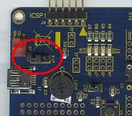

Getting Started: Running the “Device
– HID - Simple Custom Demo”
Configuration
1: PICDEM™ FS USB
Configuration
2: PIC18F87J50 PIM
Configuration
4: Low Pin Count USB Development Kit
Configuration
5: PIC24F Starter Kit 1
Configuration
6: PIC18F46J50 Full Speed USB Demo Board
Configuration
1: PICDEM FS USB
Configuration
2: PIC18F87J50 PIM
Configuration
4: Low Pin Count USB Development Kit
Configuration
5: PIC24F Starter Kit 1
Configuration
6: PIC18F46J50 Full Speed USB Demo Board
Required Hardware:
To run this project, you will need one of the
following sets of hardware:
Configuration 1: PICDEM™ FS USB
PICDEM
FS USB (DM163025)
Configuration 2: PIC18F87J50 PIM
PIC18F87J50
Plug-In-Module (PIM) (MA180021)
Configuration 3: Explorer 16
Explorer
16 (DM240001)
USB
PICtail™ Plus Daughter Card (AC164131)
And one of the following PIMs
PIC24FJ256GB110 Plug-In-Module (PIM) (MA240014)
PIC32MX USB Plug-In-Module (PIM) (MA320002)
Configuration 4: Low Pin Count USB Development Kit
Low
Pin Count USB Development Kit with PICKit 2 Debugger/Programmer (DV164126)
or without Debugger/Programmer (DM164127)
Configuration 5: PIC24F Starter Kit 1
PIC24F
Starter Kit 1 (DM240011)
Configuration 6: PIC18F46J50 Full Speed USB Demo Board
PIC18F46J50
Full Speed USB Demo Board
Configuring the Hardware:
This
section describes how to set up the various configurations of hardware to run
this demo.
Configuration 1: PICDEM FS USB
Configuration 2: PIC18F87J50 PIM + HPC Explorer
Configuration 3: PIC24FJ256GB110 PIM + Explorer 16
Configuration 4: Low Pin Count USB Development
Kit
Configuration 5: PIC24F Starter Kit 1
Configuration 6: PIC18F46J50 Full Speed USB Demo Board
Configuration 1: PICDEM FS USB
1)
If using the PICDEM FS USB Demo Board, no hardware related configuration or
jumper setting changes should be necessary.
The demo board need only be programmed with appropriate firmware.

Configuration 2: PIC18F87J50 PIM
1)
Short JP4 on the PIC18F87J50 PIM. This
allows the demo board to be powered through bus power.

2)
Short JP1 such that the “R” and “U” options are shorted.

3)
Short JP5. This enables the small
surface

Configuration 3: Explorer 16
1)
Before attaching the PIC24FJ256GB110 PIM to the Explorer 16 board, insure that
the processor selector switch (S2) is in the “PIM” position as seen in the
image below.
.JPG)
2)
Short the J7 jumper to the “PIC24” setting
.JPG)
3)
Before connecting the PIC24FJ256GB110 PIM to the Explorer 16 board, remove all
attached cables from both boards.
Connect the PIC24FJ256GB110 PIM to the Explorer 16 board. Be careful when connecting the boards to
insure that no pins are bent or damaged during the process. Also insure that the PIM is not shifted in
any direction and that all of the headers are properly aligned.
4) On the USB PICTail Plus board, short jumper
JP1. Remove all other shorts on the
board.
.JPG)
5) Connect the USB PICTail Plus board to either
of the female PICTail Plus connectors or on the card edge connector (J9) at the
edge of the Explorer 16 board.
Note: When using the HID bootloader for PIC32, it is
important to modify the procdefs.ld file to relocate the sections of code that
will hold the bootloader and those sections that will hold the user
application. Example modified
procdefs.ld files have been provided with each project. This file is currently names “Procdefs.ld.boot”. When using the example project with the
bootloader it is required to remove the “.boot” section of the file. This will allow MPLAB to use this file instead
of the default linker file. Once the
linker file is renamed, however, the project will no longer work without the
bootloader. Please rename the file in
order to get the project working again with PIC32.
Configuration 4: Low Pin Count USB Development Kit
1) Short pins 2 and 3 of J14

Configuration 5: PIC24F Starter Kit 1
The PIC24F Starter Kit does not require any hardware setup
to run this demo. This demo does,
however, require the user to change the default selected device in the project
before compiling the demo.
1) Open the associated project file
for C30
2) In MPLAB Select
“Configure->Select Device”
3) In the device list box in the top
left corner of that window, select “PIC24FJ256GB106”
Configuration 6: PIC18F46J50 Full Speed USB Demo Board
1) Short JP3 to allow the board to
be powered from the USB.
.jpg)
To
run this project, you will need to load the corresponding firmware into the
microcontroller. Precompiled Demos are
available in the “<Install Directory>\USB Precompiled Demos” folders. Each demo hex filename should include
information regarding the hardware platform it is compiled for. For this demo, select the appropriate “HID -
Simple Custom Demo” hex files that matches the hardware configuration that you
plan to use.
For more information about how to load a precompiled
project, please see the “Getting Started – Loading a precompiled demo” guide.
The
source code for this demo firmware is available in the “<Install
Directory\USB Device - HID - Simple Custom Demo\Generic HID - Simple Demo -
Firmware” directory. In this directory
you will find all of the user level source and header files as well as project
and workspace files for each of the hardware platforms.
For
more help on how to compile and program projects, please refer to the MPLAB®
IDE help available through the help menu of MPLAB (Help->Topics…->MPLAB
IDE).
Please
note that when using either the C30 or C32 demo projects you will be required
to select the correct processor for the demo board.
1) Open the associated project file
2) In MPLAB Select
“Configure->Select Device”
3) In the device list box in the top
left corner of that window, select the desired device.
This
demo uses the selected hardware platform as a HID class USB device, but uses
the HID class for general purpose I/O operations. Typically, the HID class is used to implement
human interface products, such as mice and keyboards. The HID protocol is however quite flexible,
and can be adapted and used to send/receive general purpose data to/from a USB
device. Using the HID class for general
purpose I/O operations is quite advantageous, in that it does not require any
kind of custom driver installation process.
HID class drivers are already provided by and are distributed with
common operating systems. Therefore,
upon plugging in a HID class device into a typical computer system, no user
installation of drivers is required, the installation is fully automatic.
HID
devices primarily communicate through one interrupt IN endpoint and one interrupt
OUT endpoint. In most applications, this
effectively limits the maximum achievable bandwidth for full speed HID devices
to 64kBytes/s of IN traffic, and 64kBytes/s of OUT traffic (64kB/s, but
effectively “full duplex”).
The
GenericHIDSimpleDemo.exe program, and the associated
firmware demonstrate how to use the HID protocol for basic general purpose USB
data transfer. To make the PC source
code as easy to understand as possible, the demo has deliberately been made simple,
and only sends/receives small amounts of data.
Before you can run the GenericHIDSimpleDemo.exe executable,
you will need to have the Microsoft® .NET Framework Version 2.0 Redistributable
Package (later versions probably okay, but not tested) installed on your
computer. Programs which were built in
the Visual Studio® .NET languages require the .NET redistributable package in
order to run. The redistributable
package can be freely downloaded from Microsoft’s website. Users of Windows Vista® operating systems
will not need to install the .NET framework, as it comes pre-installed as part
of the operating system.
The
source code for GenericHIDSimpleDemo.exe file was created in Microsoft Visual
C++® 2005 Express Edition. The source
code can be found in the “<Install Directory>\ USB Device - HID - Simple
Custom Demo\Generic HID - Simple Demo - PC Software” directory. Microsoft currently distributes Visual C++
2005 Express Edition for free, and can be downloaded from Microsoft’s website. When downloading Microsoft Visual C++ 2005
Express Edition, also make sure to download and install the Platform SDK, and
follow Microsoft’s instructions for integrating it with the development
environment.
It
is not necessary to install either Microsoft Visual C++ 2005,
or the Platform SDK in order to begin using the GenericHIDSimpleDemo.exe
program. These are only required if the
source code will be modified or compiled.
To launch the application, simply double click on the
executable “GenericHIDSimpleDemo.exe” in the “<Install Directory>\USB
Device - HID - Simple Custom Demo” directory. A window like
that shown below should appear:
If
instead of this window, an error message pops up while trying to launch the
application, it is likely the Microsoft .NET Framework Version 2.0
Redistributable Package has not yet been installed. Please install it and try again.
In
order to begin sending/receiving packets to the device, you must first find and
“connect” to the device. As configured
by default, the application is looking for HID class USB devices with VID =
0x04D8 and PID = 0x003F. The device
descriptor in the firmware project meant to be used with this demo uses the
same VID/PID. If you plug in a USB
device programmed with the correct precompiled .hex file, and hit the “Connect”
button, the other pushbuttons should become enabled. If hitting the connect button has no effect,
it is likely the USB device is either not connected, or has not been programmed
with the correct firmware.
Hitting
the Toggle LED(s) should send a single packet of general purpose generic data
to the HID class USB peripheral device.
The data will arrive on the interrupt OUT endpoint. The firmware has been configured to receive
this generic data packet, parse the packet looking for the “Toggle LED(s)”
command, and should respond appropriately by controlling the LED(s) on the demo
board.
The
“
For
hardware configuration 1 (PICDEM FS USB Demo Board), the firmware will check
pushbutton “S2” (RB4).
For
hardware configuration 2 (PIC18F87J50 PIM), the firmware will check pushbutton
“S4” (RB4).
For
hardware configuration 3 (Explorer 16), the firmware will check pushbutton “S3”
(RD6).
For
hardware configuration 4 (Low Pin Count USB Development Kit), the firmware will
check pushbutton “S1” (RA3).
For hardware configuration 5 (PIC24F Starter Kit 1), the pushbutton
functionality is not currently implement.
This functionality is not present in this demo.
For hardware configuration 6 (PIC18F46J50 Full Speed USB
Demo Board), the firmware will check pushbutton “S2” (RB2).
The
PC then requests a packet of data from the device (which will be taken from the
interrupt IN endpoint). Once the PC
application receives the response packet, it will update the pushbutton state
label.
Try
experimenting with the application by holding down the appropriate pushbutton
on the demo board, and then simultaneously clicking on the “
To
make for a more fluid and gratifying end user experience, a real USB
application would probably want to launch a separate thread to periodically
poll the pushbutton state, so as to get updates regularly. This is not done in this simple demo, so as
to avoid cluttering the PC application project with source code that is not
related to USB communication.
Trademarks:
The Microchip name and logo, the Microchip logo, MPLAB, and PIC
are registered trademarks of Microchip Technology Incorporated in the
PICDEM and PICTail are trademarks of Microchip
Technology Incorporated in the
Microsoft, Windows, Visual Studio, Visual C++,
and Windows Vista are either registered trademarks or trademarks of Microsoft
Corporation in the